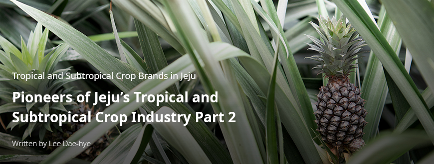
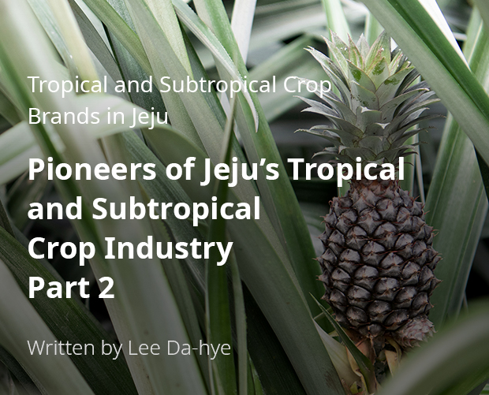
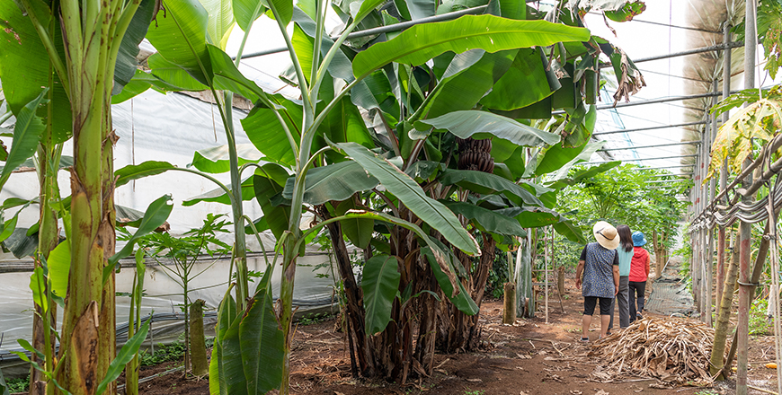
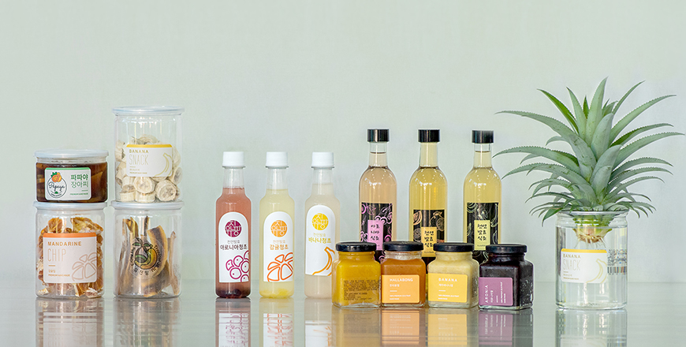
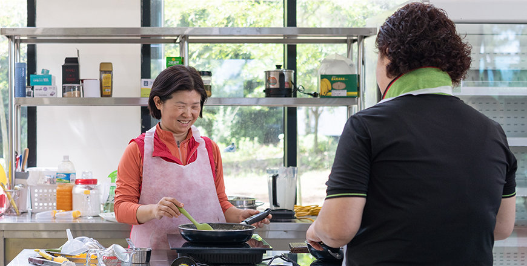

기획취재콘텐츠
- Home
- 제주라이프
- 기획취재콘텐츠
Pioneers of Jeju’s Tropical and Subtropical Crop Industry Part 2새로운 글




Yujinfang: A Leader in the Senary Industry
Enter a greenhouse filled with banana trees more than 2 m in height, and the first thing you’ll notice is the fully grown fruit hanging from each tree. Pineapples show their plump flesh among long leaves in another greenhouse, with sugar canes, mangoes, papayas, and other subtropical crops growing in another corner. Aronia trees outside the greenhouses have born charming aronia berries. Enter the warehouse that doubles as an activity program site, and you can see jars of jam and vinegar made from banana, pineapple, and other subtropical crops. Welcome to Yujinfang, the farm that ushered in the Jeju’s banana boom.

- An interior view of a Yujinfang greenhouse ⓒYun So-jin -
Kim Sun-il, CEO of Yujinfang, started a tropical fruit farm with the banana seedlings that she received from the Agricultural Technology Center in 2012. The bananas that grew on her farm were found to offer a richer taste and aroma compared to the others in the market. Kim Sun-il used to feel sick after eating imported tropical fruits. However, her usually sensitive body responded more positively with the locally grown bananas that were not treated with any chemical fertilizer or pesticide. Kim saw that her bananas could appeal to health-conscious consumers. She planted 600 banana trees in 2016 and began a full-fledged production line that same year.
Her foremost goal was to deliver the taste of eco-friendly bananas to consumers. For this reason, Yujinfang does not use any pesticide that may be harmful to human bodies. However, the no-pesticide policy meant that she had to deal with the pests using natural means. Tropical crops are notorious for gathering more pests and spiderwebs than other crops. Kim and her husband had to come up with a solution to the problem, and the result was the “Triangle Roof Greenhouse.”
- Eco-friendly banana farming in Triangle Roof Greenhouses ⓒYun So-jin -
The Triangle Roof Greenhouse is designed to exchange heat and circulate air inside the greenhouse by sealing both sides and leaving an opening on the triangle-shaped roof. The heat exchange and air circulation reduce the temperature gap between the upper and lower parts of the greenhouse. Kim found out that banana trees planted in a standard greenhouse don’t fully grow their leaves in the lower section, and the leaves in the upper section are damaged by intense heat in the upper part of the greenhouse. With the Triangle Roof Greenhouse, Kim was able to reduce the temperature gap and maintain a good temperature for bananas in both the upper and lower parts of the greenhouse. By sealing the sides, she was also able to keep pests from crawling into the greenhouse. The Triangle Roof Greenhouse was patented in 2016 for its effectiveness in preventing pests and promoting crop growth. The full title of the greenhouse is a “Vinyl Greenhouse With Triangular Top Roof For Ventilation.”
After her success with home-grown bananas, she moved on to papayas. Green papaya has wide-ranging applications, and Kim recorded a sale through direct transactions with end consumers. Convinced that tropical and subtropical crops have a chance in Korea, Kim built an experimental cultivation wing. She began to experiment with various subtropical plants, such as yellow papaya, sugar cane, and pineapple. Once a crop is proven to be marketable and the cultivation technologies for the crop are secured, she would immediately begin the process of cultivating the crop. One of the outcomes of these efforts is Kim’s pineapples, which she recently began production and sale.
- Green papaya grown at Yujinfang ⓒYun So-jin -
Yujinfang launched activity programs, developed processed food products, and launched promotional activities to promote the consumption of tropical and subtropical crops. Through this approach, Yujinfang launched a senary industry business from tropical and subtropical crops. Yujinfang grows banana, papaya, aronia, and pineapple on a 31,404 m2 of land and runs activity programs, where visitors can make their own jam and vinegar. Jam and vinegar made from aronia, banana, and pineapples are sold in another corner of the activity hall. In addition, the farm makes jam, vinegar, and homemade fruit tea made from hallabong, tangerine, and green tangerine. All of which are also for sale at the activity hall and in online marketplaces. Other farm products include semidried banana chips.

- Processed food made of subtropical fruits sold at Yujinfang ⓒYun So-jin -
You have to slice bananas on the side to preserve their sweetness. Semidried banana chips are popular as a sweet but healthy snack. We have a steady inflow of visitors joining our jam– and vinegar–making programs, and they leave the farm very satisfied.
- Kim Sun-il, CEO, Yujinfang
Kim looked for ways to increase the use of tropical and subtropical crops. During her search, she came across a training program at the Jeju Agricultural Technology Center. She joined the program to learn the basics of fruit jam– and vinegar-making and used banana, pineapple, and other tropical crops as the main ingredient. Tropical fruits are quick to become overripe and discolored, which makes it difficult to market the fruit products. After repeated attempts, Kim finally found the percentage of lemon juice that brings out the taste of the fruits while preventing discoloration. Yujinfang’s naturally fermented fruit vinegar only uses brown rice and yeast and is fermented for over a year, whereas regular vinegar is made by adding artificially cultured acetobacters in alcohol and fermented only for two to three days. One of Yujinfang’s popular products is the banana vinegar, made from pesticide-free bananas and natural fermentation. Yujinfang’s fruit cafè in Hogeun-dong, Seogwipo, offers a banana makgeolli (rice wine)–making program. The program is popular among local residents as well as tourists.

- Banana vinegar–making program -
- (left)banana vinegar , (right) and a green papaya salad to be topped with banana vinegar -
Yujinfang’s venture into the senary industry has only begun.
We are building a subtropical fruit theme park for tourists. Tourists will be able to not only pick their own fruit but also observe subtropical and tropical fruits up close, enjoy eating them on-site, and make their own jam and vinegar to take them home.
- Kim Sun-il, CEO, Yujinfang